Corrección guiada por la cuadrícula de la panorámica. Esta entrega permite revisar siluetas y colocación; todavía no acredita una réplica visual terminada.
Abrir candidata · Referencia VR · Versión R11
Una sola cámara estimada: [9.15, 0, 3.18]. Las ocho orientaciones comparten esa posición. Los 24 controles se miden sobre piezas reales del archivo Blender; error máximo 26.1 px de 2048. Son controles de ajuste, no mediciones independientes de la instalación real.
| Contorno | Máximo en controles | Máximo fuera del ajuste |
|---|---|---|
| exhaust | 27.0 px | 21.8 px |
| jacket | 28.2 px | 17.7 px |
Los bordes reservados se anotaron manualmente y no intervienen en la deformación. El encaje sigue los rayos de la panorámica; la profundidad oculta continúa inferida.
Inventario por pieza: ubicación, material, fuente y clasificación
Se verifican carga fallida y reintento, sustitución conjunta, detalle bajo demanda, corte nominal por lado, reproducción, filtros y reinicio. Tres recorridos de cambio de sala mantienen estables los recursos residentes.
Conjunto izquierdo: 94,021 triángulos en recorrido y 130,587 en detalle. Incremento estimado máximo comprobado: 95.1 MiB. La estimación excluye lienzo/MSAA, cachés del controlador y programas.
Medición por software, Chromium/SwiftShader, 600 × 400, DPR del dispositivo 2; muestras cortas de 12 cuadros por secuencia, sin validación sostenida de rendimiento. CPU: INTEL(R) XEON(R) PLATINUM 8573C. Cuota de CPU: 400000 100000. Los percentiles siguientes no acreditan las metas de FPS en GPU física.
| Secuencia | R11 p50 / p95 | Candidata p50 / p95 | Resolución final | Dibujos / triángulos |
|---|---|---|---|---|
| fixed walking, 600×400 | 9582.9 / 11116.2 ms | 6383.1 / 6833.0 ms | 600 × 400 | 73 / 574,633 |
| adaptive walking, 1.5M pixel movement budget | 11782.9 / 24498.9 ms | 8066.4 / 16899.4 ms | 660 × 440 | 71 / 564,711 |
| nominal cutaway playback, fixed 600×400 | 13216.2 / 13349.5 ms | 13249.4 / 13332.8 ms | 600 × 400 | 62 / 1,455,607 |
Las mallas exteriores se preparan antes de cronometrar. Las secuencias recorren el pasillo de ida y vuelta mediante los controles de caminata; se miden por separado resolución fija, adaptable y corte animado. El informe JSON incluye muestras, descargas y estado de reposo. La vista habitual no solicita los activos nuevos. La separación de piezas conserva todos los atributos y cambia 304 píxeles de borde de 540.000 (0,056 %); con el GLB original, el código nuevo reproduce R11 píxel por píxel. El informe conserva ambas comprobaciones.
Escena Blender editable y fuentes · Hashes del archivo de autoría
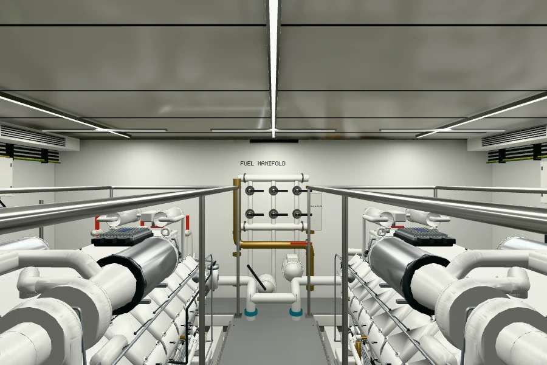
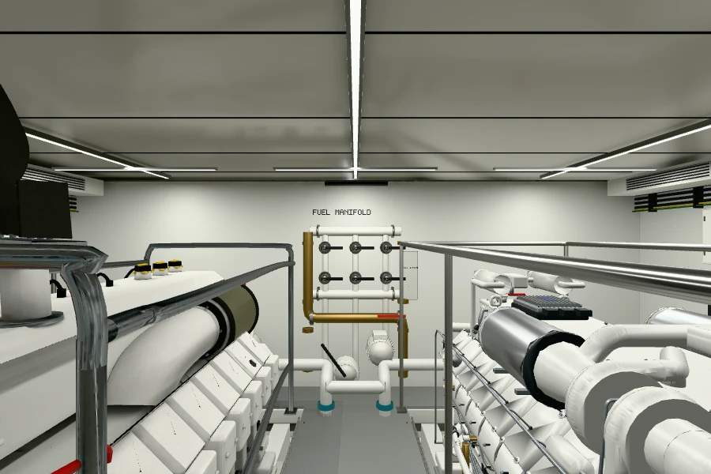
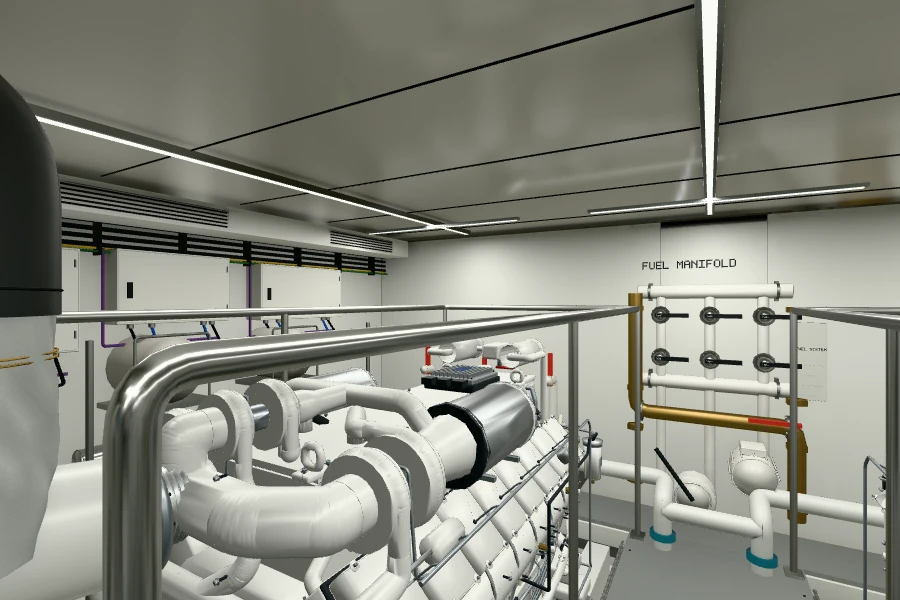
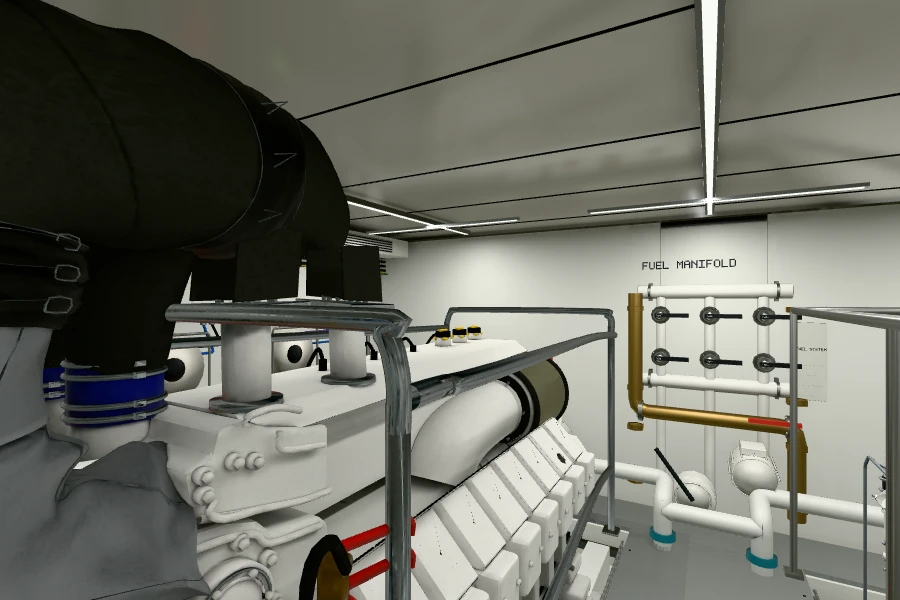
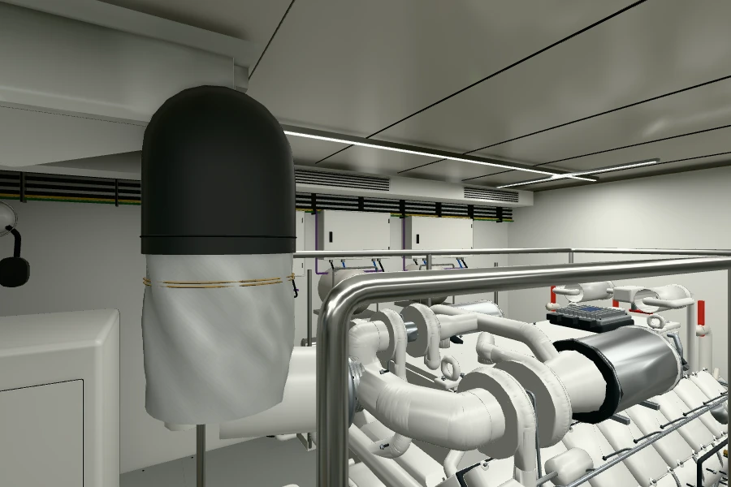
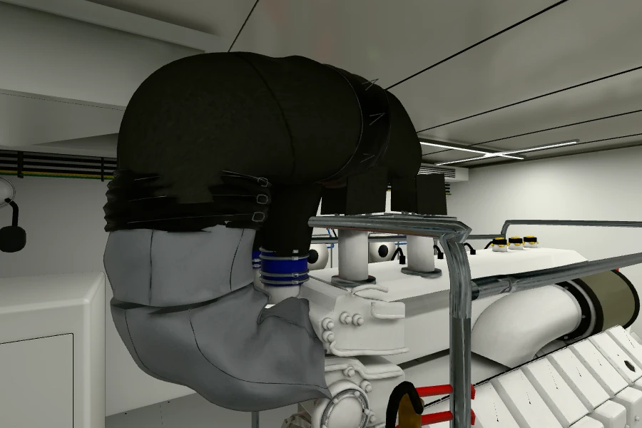
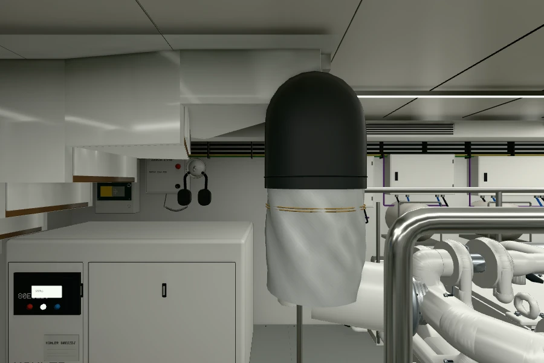
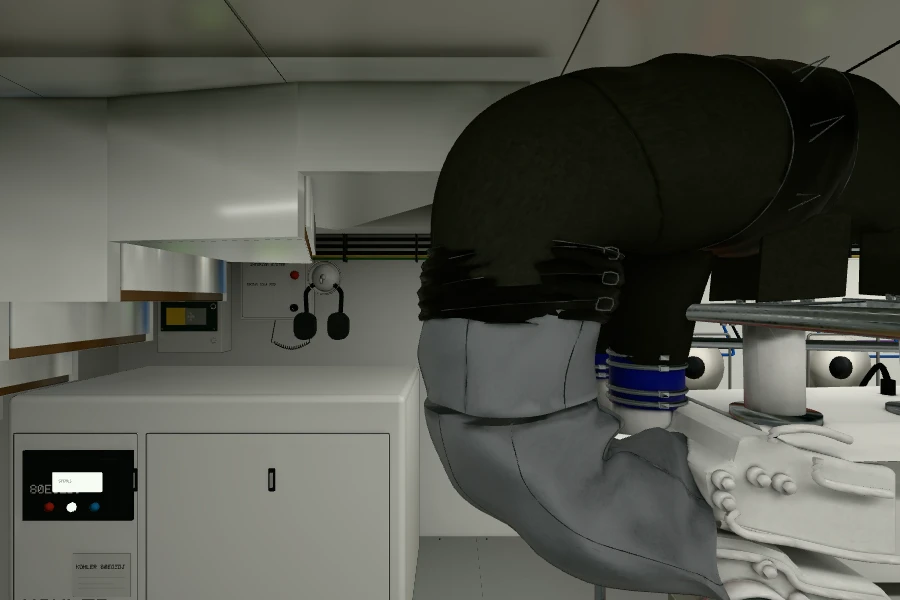
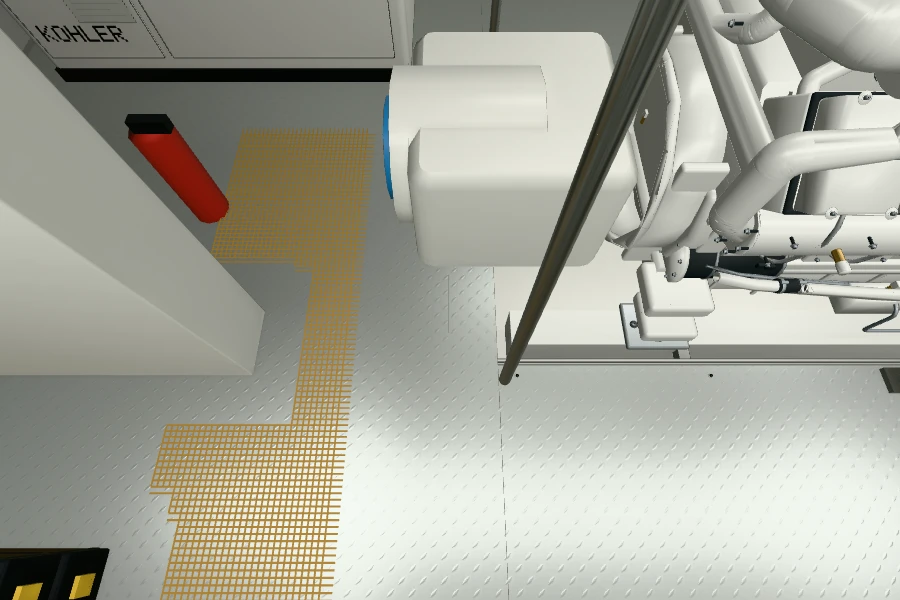
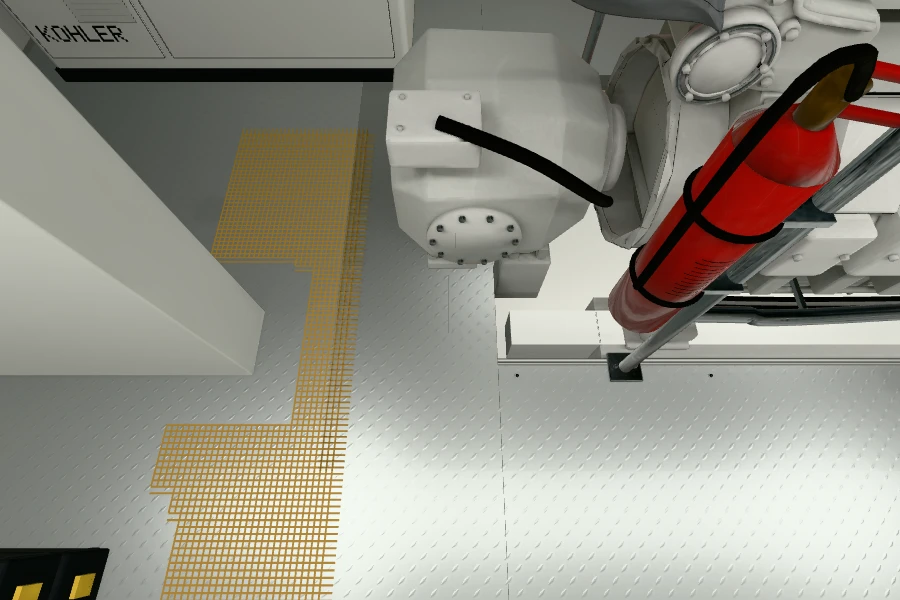
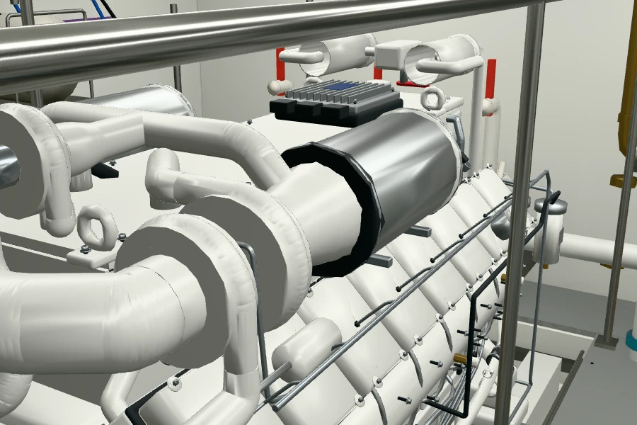
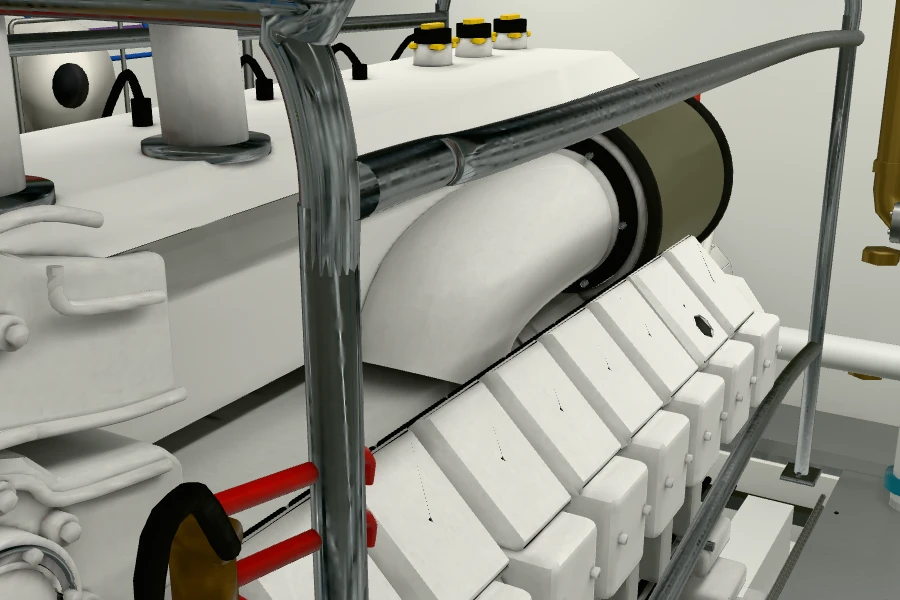
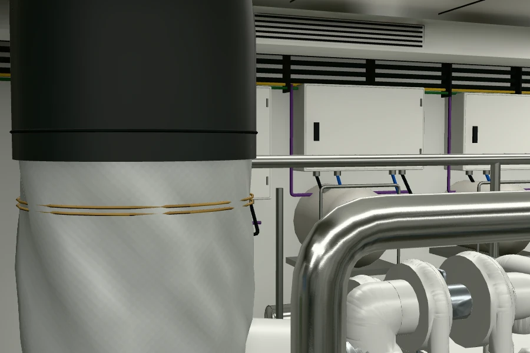
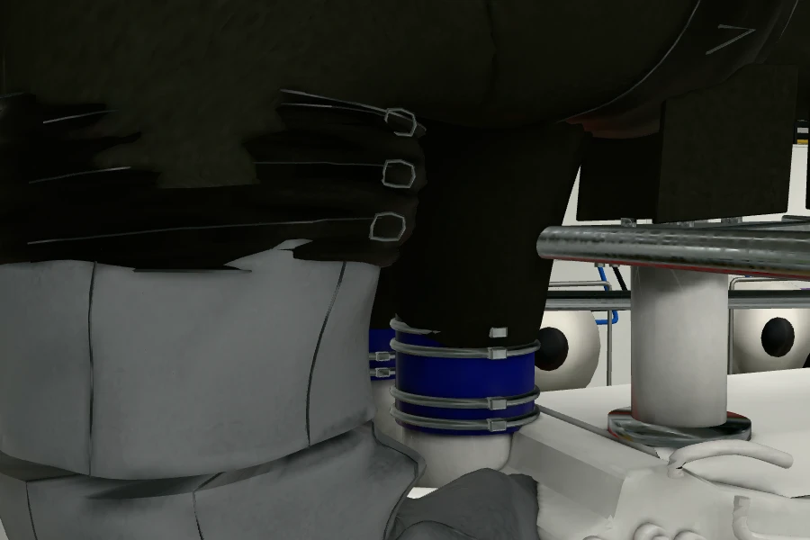
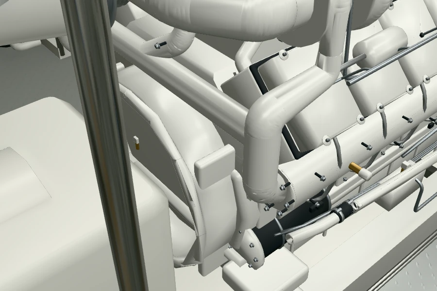
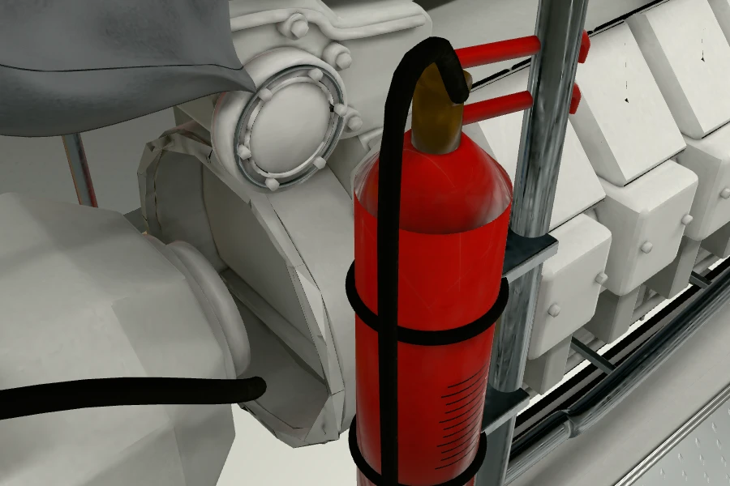
Formas de carcasas y accesorios, juntas, pliegues y costuras finas, rótulos y lectura de los reflejos. La carcasa longitudinal próxima sigue simplificada y algunas tapas nominales conservan marcas oscuras pendientes de revisar. El encaje de los contornos no resuelve esos detalles. La geometría derecha y los activos de inspección nominal se conservan.
La inspección izquierda cambia expresamente a la mecánica nominal R03. Al cerrar el corte restaura el exterior VR y retira su sombra reversible.
Datos y capturas de validación. Las fotografías VR permanecen privadas y no forman parte de las texturas publicadas.